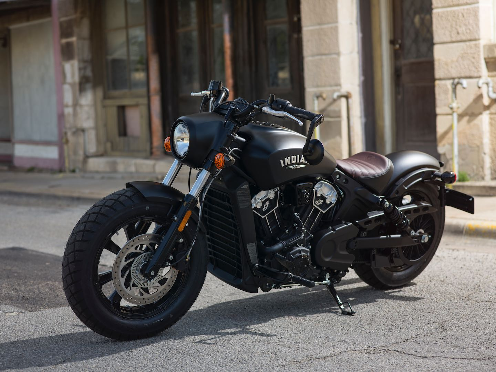

BOBBER
In general, excess weight on the motorbike is usually removed or cut to reduce the load on the motorbike. All unnecessary hardware is usually removed to reduce weight including the exhaust in most cases and is usually a single seater.
